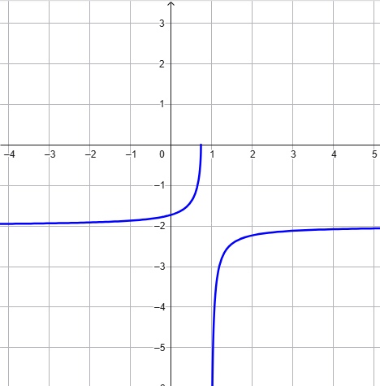

Dopo aver calcolato la derivata della funzione \(f(x) = \sqrt{\dfrac{4x - 3}{x - 1}}\)
stabilire se il grafico della funzione \(f\) può essere quello rappresentato in figura.

Soluzione
La derivata della funzione è
\[
f^{\prime }(x)=-\frac{1}{2(x-1)^{2}}\sqrt{\frac{x-1}{4x-3}}
\]
Osserviamo la derivata assume valori negativi per ogni valore \(x\) per cui è definita, dunque
è decrescente negli intervalli che compongono il dominio.
Di conseguenza il grafico non può rappresentare la funzione \(f\), perché esso è crescente nei
due intervalli che compongono il dominio.
Esercizio
Dopo averne individuato il dominio ed il comportamento agli estremi del dominio,
studiare gli intervalli di monotonia della funzione
\[
f(x) = \dfrac{x -1}{e^x}
\]
Soluzione
Il dominio della funzione \(D = \mathbb{R} = (-\infty\,,\,\,+\infty)\).
Il limite per \(x \rightarrow -\infty\) è
\[
\lim{x \rightarrow -\infty }\frac{x-1}{e^{x}} = -\infty
\]
mentre quello per \(x \rightarrow +\infty\) è
\[
\lim{x \rightarrow +\infty }\frac{x-1}{e^{x}} = 0
\]
La derivata della funzione è
\[
f^{\prime }(x)=\frac{2-x}{e^{x}}
\]
Studiandone il segno troviamo che la funzione è crescente in \((-\infty\,,\,\,2)\), mentre decresce
in \((2\,,\,\,+\infty)\)
Esercizio
Determinare il coefficiente angolare della retta \(r\) tangente al grafico della funzione
\[
f(x) = \dfrac{8x^2 - 1}{5x - 2}
\]
nel punto \(\left(0\,,\,\,\dfrac{1}{2}\right)\).
Soluzione
Siccome la derivata di \(f\) è
\[
f^{\prime }(x) = \frac{40x^{2}-32x+5}{(5x-2)^{2}}
\]
il coefficiente angolare della retta \(r\) è \(f^{\prime}\left(0\right) = \dfrac{5}{4}\).